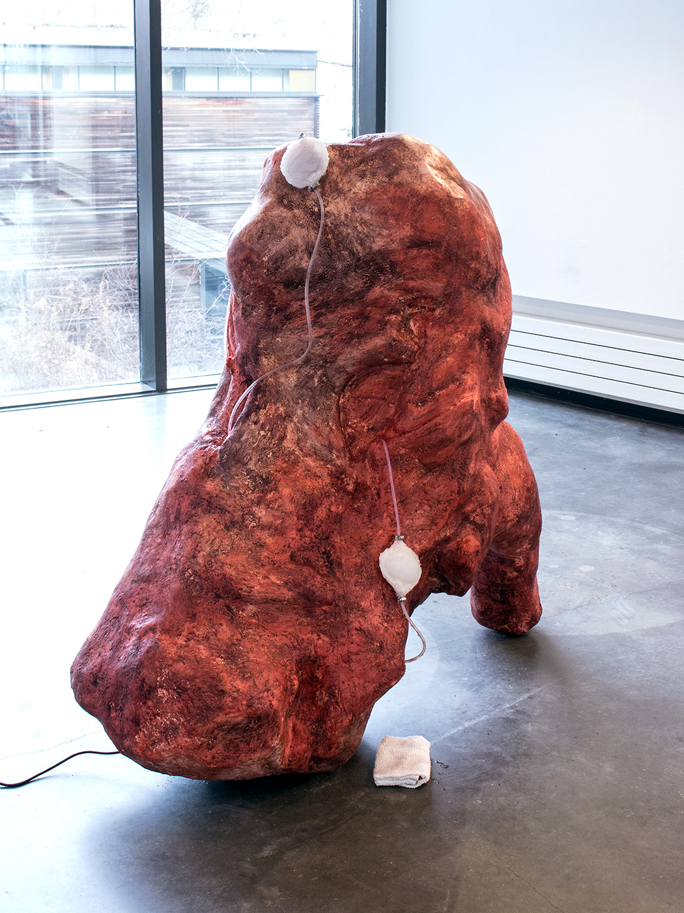

<h1> Cortices </h1>
<h2> 2018</h2>
<h2> Fiberglass-reinforced gypsum cement, petroleum wax, paste wax, earth pigments, silicone, vinyl tubing, stainless steel hardware, terrycloth, glass, oil of milk, water, & fountain pump </h2>
<h2> 53” x 58" x 33"</h2>

<figure class="slide">
  
</figure>

<figure class="slide">
  
</figure>

<figure class="slide">
  
</figure>